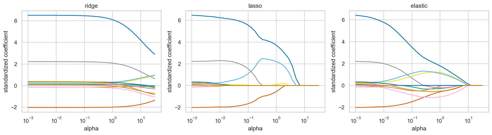

ML Hands-on Lab · 01 — Linear and generalized linear
Regularization: ridge, lasso, and elastic net
1. The one-sentence version
Regularization makes large coefficients costly so a linear model gives up some training fit for stability, sparsity, or both.
2. The intuition
Imagine distributing a fixed explanation budget across features. Ridge discourages any one huge claim; lasso also charges for every nonzero claim and can drop features entirely.
A five-item example
For coefficients [4,1,0,0,0], L1 size is 5 and L2 squared size is 17. Lasso charges 5λ and can zero entries; ridge charges 17λ and tends to shrink all smoothly.
3. The maths in plain English
\[\min_\beta \|y-X\beta\|_2^2+\lambda\left((1-\rho)\|\beta\|_2^2+\rho\|\beta\|_1\right)\]
λ is overall penalty strength: larger means more shrinkage. ρ mixes ridge at zero and lasso at one. The first term still rewards fitting the data.
4. What the model is actually doing during training
- Standardize features so a unit coefficient has comparable meaning.
- For each alpha, minimize squared error plus the chosen penalty.
- Record every coefficient to form a path.
- Use cross-validation inside training to select alpha for final candidates.
5. The knobs
| Knob | Too low | Too high |
|---|---|---|
| Alpha λ | Unstable, OLS-like weights. | Everything shrinks toward the mean. |
| L1 ratio ρ | Dense ridge-like solution. | Sparse lasso-like selection. |
| CV folds | Noisy penalty choice. | More compute and highly overlapping folds. |
6. Assumptions and failure modes
The useful relationship must still be expressible by the supplied linear features. Correlation makes feature selection non-unique. Shrinkage changes coefficient interpretation, and cross-validation must remain inside the training boundary.

7. Code
Minimal version
from sklearn.linear_model import Ridge
model = Ridge(alpha=1.0).fit(X_train, y_train)Realistic version
from sklearn.pipeline import make_pipeline
from sklearn.preprocessing import StandardScaler
from sklearn.linear_model import ElasticNetCV
model = make_pipeline(StandardScaler(), ElasticNetCV(
l1_ratio=[.1,.5,.9], alphas=np.logspace(-3,2,50), cv=5, random_state=0
)).fit(X_train, y_train)8. Where it's actually used
- Genomic prediction with thousands of correlated markers.
- Marketing attribution with correlated channel spend.
- Credit models with overlapping financial ratios.
- Text models whose token features far outnumber documents.
9. How it relates to its neighbours
Ridge is a Gaussian-prior MAP estimate; lasso corresponds to a Laplace prior. Elastic net combines them. Tree ensembles regularize structure instead of linear coefficients and handle interactions without explicit feature crosses.